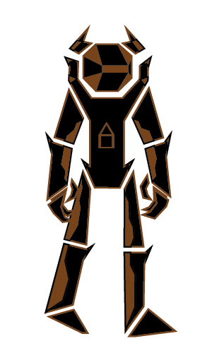
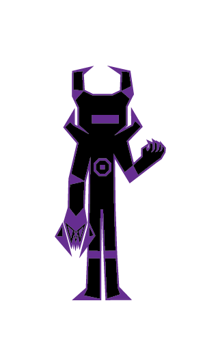

Entry no.122: The Members of the Hope of Humanity
Source: Personal bios and Earthtropolis database
Ivan "Legend" Slovinky

Ivan Slovinky, the second to last member of the Hope of Humanity, is an ex Russian mercenary; the sole survivor of his jumpteam after a mission went sideways. After that, he retired from the military to focus on spending time with his family. His experiences taught him that time is forever the most valuable resource. When the Hivedroids invaded Russia, and Ivan encountered a Hivedroid, he stayed behind to give his family time to evacuate to the moon. He faught restlessly for twelve hours straight before being calcified in nanostasis via the Pulse. Beta-001 found intrigue towards Ivan and how he was able to hold his ground against the Hivedroids, so Beta-001 reverse engineered the method Tech used to become Tech. The plan backfired though, and Ivan came out of nanostasis, memories intact, an outcome never seen until Ivan. A year later, Tech found Ivan on Earth and brought him back to the moon where he joined in the efforts of the Future Resistance, later with the Hope of Humanity. The stories he told of his life gave him the combat codename, "Legend". Ivan now serves as a general beside Tech, in charge of making sure defences are state of the art everywhere.
Laya "Stalwart" Porterson

Laya Porterson was a core leader of the Hope of Humanity, being more of a powerhouse in the frontlines of every battle with her shield and shotgun cannon. She's also always been more stern due to her leadership role, but it always evened out with her ambition, her dream to see a green Earth in person for the first time. So Laya trained hard, even getting a nanodroid implant to keep up with the ones from nanostasis. She eventually landed a spot in the Hope of Humanity. She never got to see the Earth green, as most of it is now, though she would have been in awe of its sheer beauty.